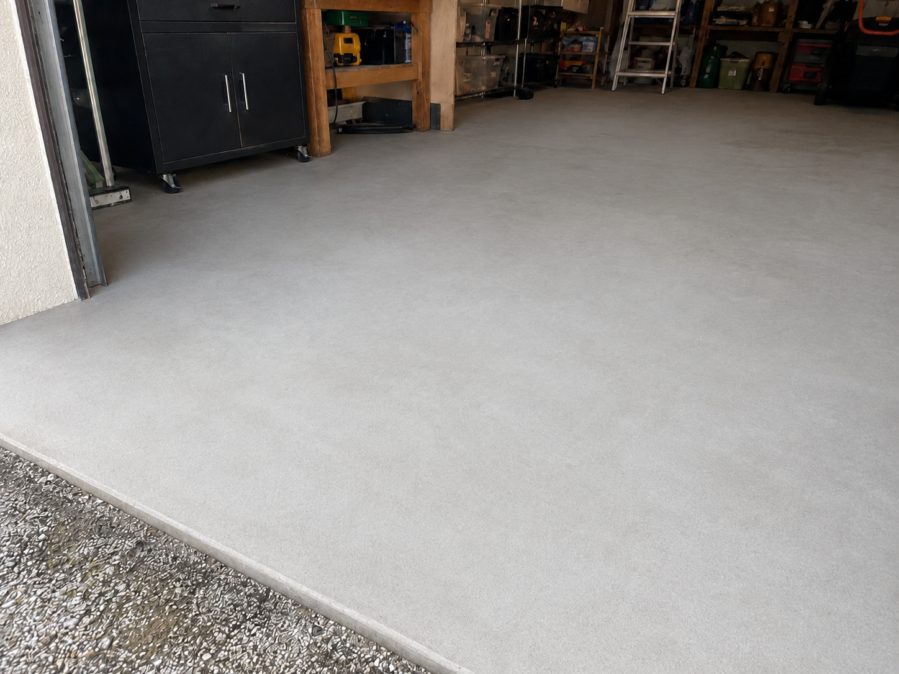
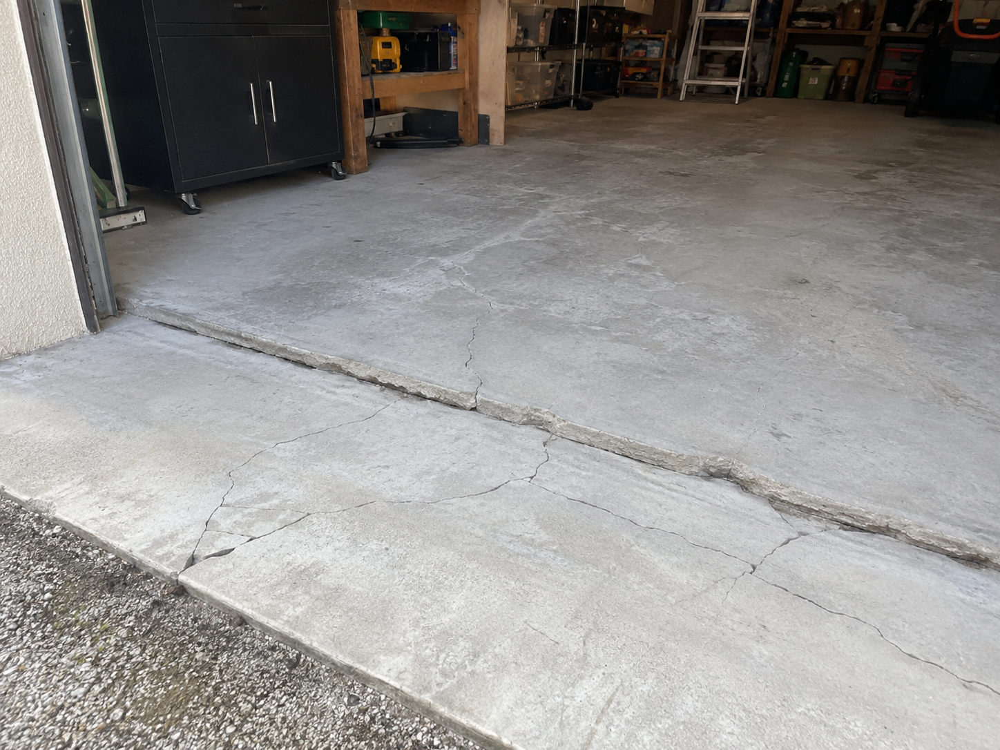

Gros œuvre
Reprise de dalle béton — garage 40 m²
Une dalle fissurée et désaffleurée dans un garage à Châteaubriant. Démolition, réglage de la forme, ferraillage puis coulage d'une dalle neuve plane. Quatre jours, garage de nouveau utilisable.

